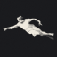
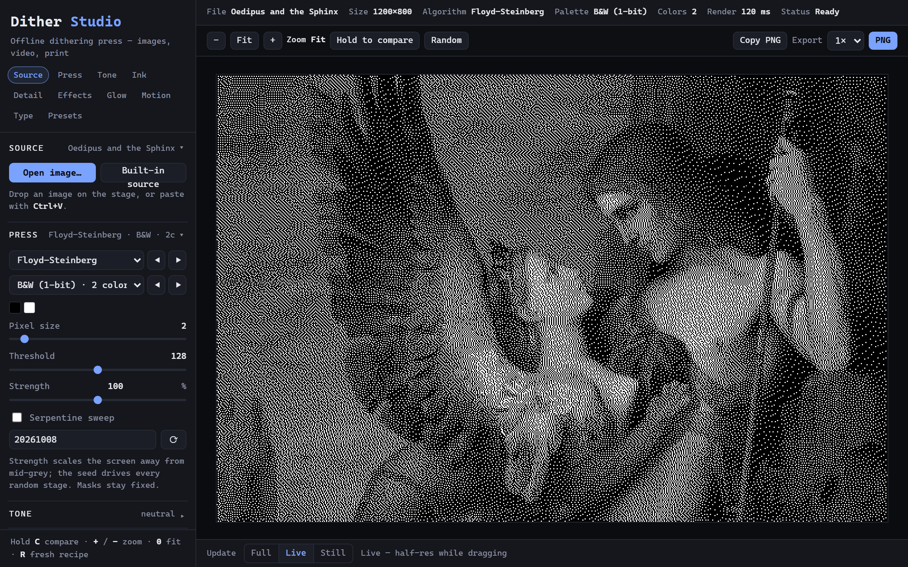
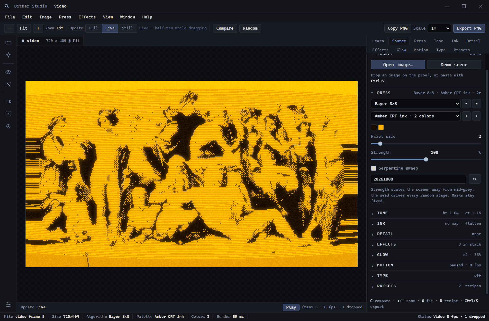

Ink Extractor
Pulls a limited palette from the open image through four extraction methods, then hands it to the normal palette importer.

Dither StudioA press that takes a painting, a photograph or a video and rebuilds it out of one palette’s marks.
Desktop app for Windows and macOS. It does not run on phones or tablets.
The film opens on the Creation of Adam, close enough that the fingers are the whole frame.
It lands in the gap and grows by doubling, on the grid it will live on.
The dither spreads from that point as sixteen-pixel marks and resolves to four.
Three paintings from the app’s own library, each through a different algorithm.
The real console, and the same proof printed as characters instead of pixels.
One painting, two screens. The average tone holds and the grain changes.
Scroll, and the film runs with you
Forty-six algorithms, from a Bayer screen to error diffusion to three that read the picture’s own structure. Every one is a published method with a name in the menu, and the catalogue on this page is the one the app ships.
Windows and macOS. The build is unsigned, so the system asks once. It draws the same with the cable out.
Dither Studio is a desktop app for Windows and macOS. It does not run on phones or tablets; the web demo is a browser preview.
The web build, one click away. Same 46 algorithms and 30 palettes as the desktop app, with no install and nothing uploaded. Open it in its own tab if you would rather keep it.

Text mode prints the image as a grid of glyphs from a ramp you choose, at a cell size you choose. The paper and the type come from the palette, so a Game Boy proof is green type on green paper.
Export writes the grid as plain text, one line per row, which is a format that survives being pasted anywhere.

Every colour in a proof is one of the palette’s own entries. The Game Boy palette is the four greens the hardware could show; the C64 palette is the sixteen the VIC-II produced. Nothing is invented and nothing is blended.
For flat areas that need more tones than the palette has, the mixing plans alternate between entries so the average lands where it should. A flat 128 reads as 128 from a metre away.

Drop a clip in, or point it at a webcam. The frame loop renders at the speed the machine can hold and drops frames instead of queueing them, so playback stays honest about what it can do.
Recording writes the result to WebM. There are three temporal rules for how the recipe moves between frames, and a frame index always produces the same recipe, so a recording can be repeated.

File ▸ Plugin Manager installs declarative JSON packages that switch on a built-in tool or add recipes and inks. Installed packages stay on the machine, and nothing inside one can run.
Pulls a limited palette from the open image through four extraction methods, then hands it to the normal palette importer.
Adds barcode, cross-stitch, halftone and bitmap shapes to the effect stack, hidden until its package is installed.
Drafts lockable inks with harmony rules, a Lospec or pasted palette, image seeding, a contrast meter and tone/hue sorting. Saved schemes can be renamed, reopened or deleted from File ▸ Manage Color Schemes; the result can leave as a palette pack.
The bundled catalogue has seven packages: three tools and four preset packs. The Presets picker keeps the built-in recipes first and gives each installed pack its own heading. Preset and palette packs add recipes or inks, and a pack exported by one Dither Studio installs from a file in another. Removing a pack takes its heading and entries with it.
These are the catalogues inside the engine. The tests count them, so what is on this page is what the app ships.
Four selected proofs, every mark one of the palette’s own entries. The full shelf is below.


Drag or swipe the shelf, use the arrows, or scroll sideways. On a fine pointer, the loupe follows.
… reading the folder
Every still and clip in examples/ appears here, the 0.3.0 plates leading the shelf, with no list to keep in step. Open the folder.
Reading the shelf…
The installer is the whole press. It opens on your machine and saves to your disk.
There is no login. The installer is the whole app, and it opens on your own machine.
Your images are read from disk and written back to disk. Nothing is sent anywhere.
No fonts, no analytics, no licence check. The installed app checks GitHub for a new release (and downloads one only when you approve it), and one Lospec palette when you ask it to import one; your images are never sent anywhere. The web demo above loads only when you start it.
On Windows, SmartScreen says “Windows protected your PC”: choose More info, then Run anyway. On macOS, right-click the app, choose Open, then Open again. Once each, and then never.
Installers are 108 MB on Windows; the macOS disk images are 124 MB for Apple silicon and 127 MB for Intel. The portable executable needs no install at all.
Help ▸ Check for Updates asks the public release page for a newer build and installs it when you agree. A new version keeps your images and settings, and an offline press is never interrupted.
The frame is capped so the loop can keep up with the clock. A still is printed at full resolution; a moving frame is not.
One installer. It works offline and writes PNG files to your disk.
There is no server in this product. The installed app checks the public GitHub release page for updates, and the Lospec palette you ask it to import, and otherwise works from your disk; the web demo above loads only when you start it.
Desktop app only: Windows and macOS. It does not run on phones or tablets.